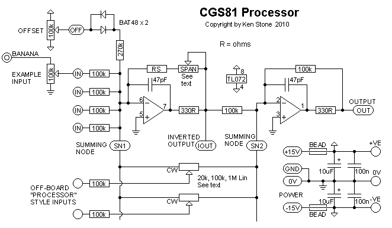
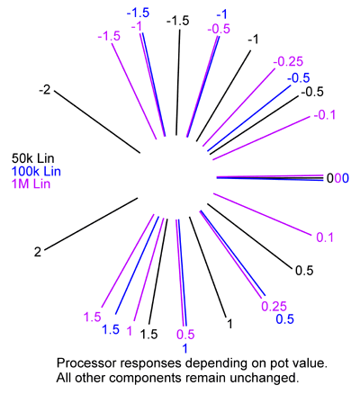

|
This module is a variation on the standard two-inverting-stage op-amp DC Mixer. It has provision for an offset pot, four DC mixer inputs, processor style inputs, with both inverting and non-invering outputs, though the inverting output cannot be used with the processor function. It will work on either +/- 12 volts or +/-15 volts without modification. A little on how it works:  The schematic for one half of the dual voltage processor. Both sections are identical. The circuit is a standard two-inverting-stage op-amp DC Mixer. The processor works by feeding the signal to the two summing nodes, both of which are at 0V (virtual grounds). With a processor input pot in the center of it's travel, the signal is fed equally to both inverting stages. The output of the first stage, being an inversion of the input signal, cancels out the signal being fed directly into the second stage. By adjusting the pot to either side, either the inverting or the non-inverting is increased with respect to the other, the difference being buffered by the second stage and fed to the output.
Construction
Before you start assembly, check the board for etching faults. Look for any shorts between tracks, or open circuits due to over etching. Take this opportunity to sand the edges of the board if needed, removing any splinters or rough edges. When you are happy with the printed circuit board, construction can proceed as normal, starting with the resistors first, followed by the IC sockets if used, then moving onto the taller components. Take particular care with the orientation of the polarized components, such as electrolytics, diodes, transistors and ICs. When inserting the ICs in their sockets, take care not to accidentally bend any of the pins under the chip. Also, make sure the notch on the chip is aligned with the notch marked on the PCB overlay. If you are not going to separate the board into two units, you do not need to install the beads and power connector at one end of the PCB. The 10uF electrolytics can be installed, as they will help with power rail decoupling. There is provision on the rear of the board to install 10n to 100n, 1206 or 805 SMT capacitors across the power rails near the 10uF Electrolytic capacitors. These are optional. The 270k resistors control the limit of the offset pot, and can be reduced or increased to suit individual taste. The BAT48 diodes provide a dead zone in the center of the offset pot's rotation, to allow for easier zeroing. When built as a mixer, overall gain, with an input pot fully clockwise, can be changed by varying the value of the resistor "RS" and its associated trimmer "SPAN". A higher value will give more gain. For unity gain at either end of the pot's travel, the total of RS and SPAN will be 100k. A 91k resistor "RS" and a 20k single turn trimmer would be acceptable for adjusting unity gain. A 100k resistor "RS" and a 100k single turn trimmer would give a gain roughly tunable between unity and 2 times. A 47k resistor "RS" and a 100k 25 turn trimmer would give a gain roughly tunable between 0.5 and 1.5 times, but with fine enough resolution to accurately set unity gain. OR you could just use 100k for RS and place a link between the two pads of the SPAN trimmer linked with a line. That will give you unity gain without the hastle of trimming. If you are building this as a processor, you need to do this, as the trimmer only controls gain in the first stage, and as such is of little use. The number of 100k resistors used depends on the number of inputs that are to be used. You will need one per input. There is provision on the PCB for 4 resistors per mixer. Additional resistors can be connected to the point marked "SN1". If you are using the board to make processors, the input resistors can be omitted from the PCB. A 100k resistor will be needed between each input jack and the wiper of its corresponding pot. The value of the pot used in the processor will affect the response of the pot. The pot itself MUST be linear. For example, a 50k will be slightly anti-log.

Pad identification
Set UpFor both mixer and processor functions, setup is the same procedure.
Notes:
Parts list This is a guide only. Parts needed will vary with individual constructor's needs. If anyone is interested in buying these boards, please check the PCBs for Sale page to see if I have any in stock. Can't find the parts? See the parts FAQ to see if I've already answered the question. Also see the CGS Synth discussion group.
Article, art & design copyright 2011 by Ken Stone
| ||||||||||||||||||||||||||||||||||||||||||||||||||||||||||||||||||